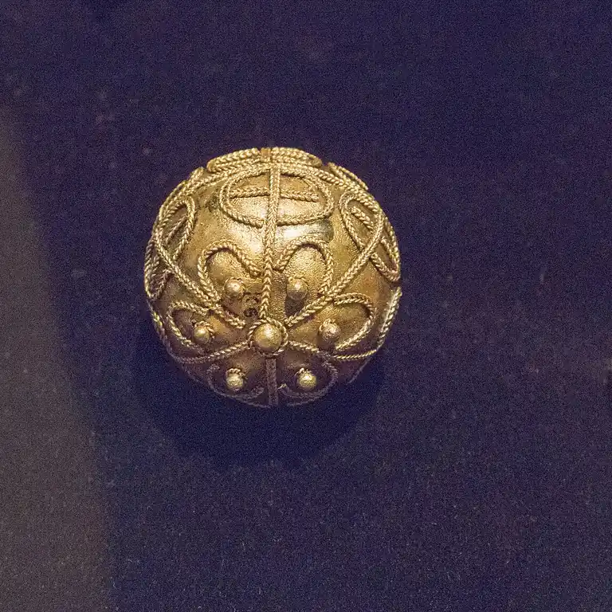
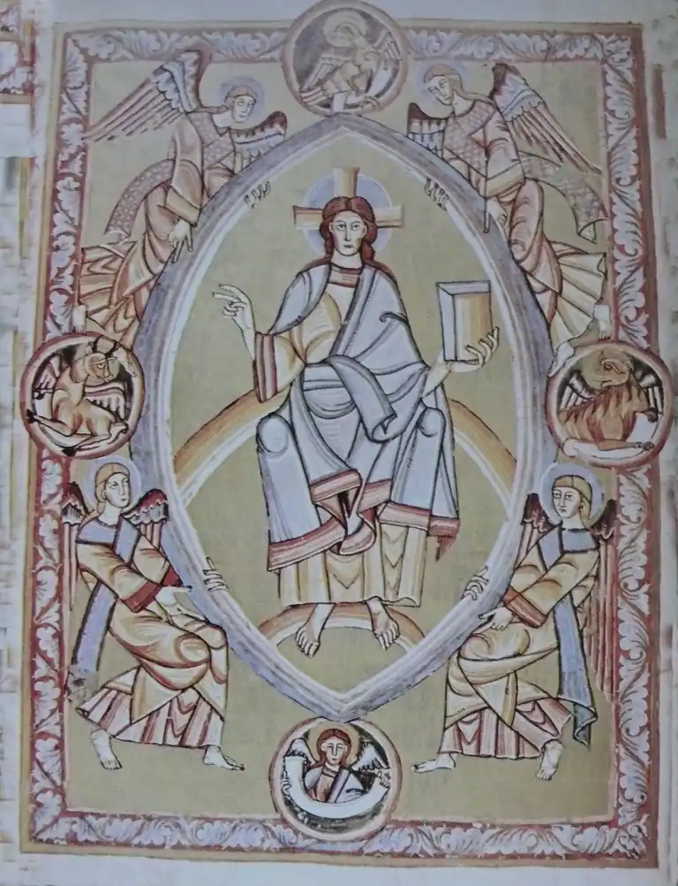
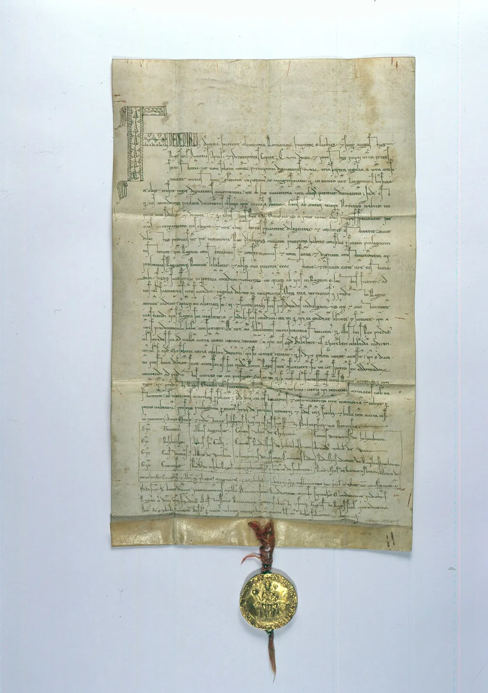
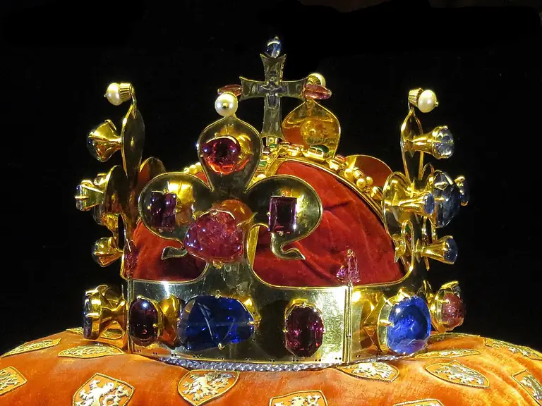
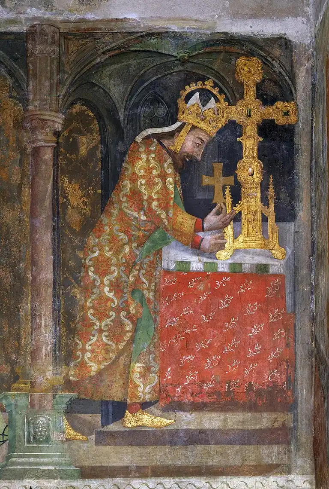
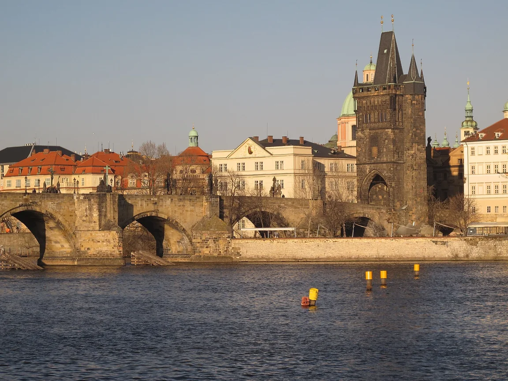

Století
Jedno století je 100 let. Rok 1348 patří do 14. století: vezmi první dvě číslice (13) a přičti jedničku.
Pro 4.–5. ročník: od příchodu Slovanů po Karla IV.
Dějiny jsou příběh lidí, kteří tu žili před námi. Abychom se v nich vyznali, řadíme události za sebou v čase – od nejstarší po nejnovější. Pomáhá nám k tomu časová osa.
Jedno století je 100 let. Rok 1348 patří do 14. století: vezmi první dvě číslice (13) a přičti jedničku.
Sámova říše (7. století) → Velká Morava (9. století) → Přemyslovci (svatý Václav, Přemysl Otakar II.) → Lucemburkové a Karel IV. (14. století).
Pověst je vyprávění, které se předávalo ústně (praotec Čech, Libuše, Bivoj). Doložená událost má doklad – listinu, knihu, stavbu nebo šperk z té doby.
Jak poznám, co bylo dřív? Porovnám letopočty: menší číslo roku = starší událost. Rok 935 (zavraždění svatého Václava) je dřív než rok 1212 (Zlatá bula sicilská).
Typická chyba: pověsti mezi skutečné události nepatří. Praotce Čecha na Řípu nevíme z listin, víme o něm jen z vyprávění. Naopak Karlův most stojí dodnes – to je doklad, že ho Karel IV. opravdu stavěl.
Seřaď od nejstarší po nejnovější: začala stavba Karlova mostu · vznik Sámovy říše · zavraždění svatého Václava · Zlatá bula sicilská.
✅ Sámova říše (7. století) → zavraždění svatého Václava (935) → Zlatá bula sicilská (1212) → stavba Karlova mostu (1357).
Přehled: Sámova říše (7. století) → Velká Morava (9. století) → Přemyslovci → Lucemburkové a Karel IV. (14. století). Letopočty si spoj s tím, co se tehdy stalo.
To nejsou kresby z dneška, ale skutečné věci a obrazy z té doby. Podle nich víme, jak to opravdu bylo.





